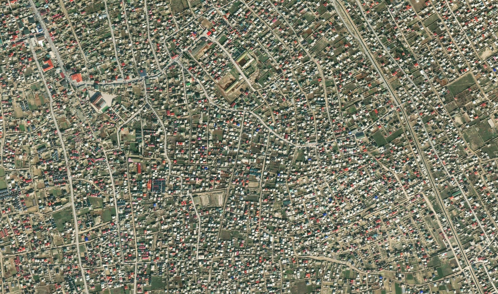
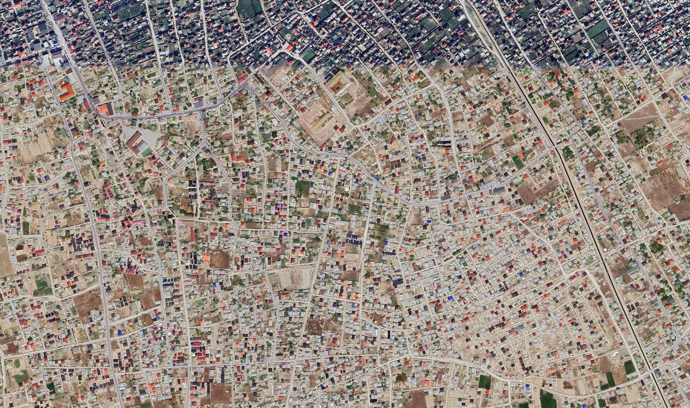

Reference:arcgis_sample.png (bottom layer, right side) •
Source:google_sample.png •
Warped output:output.png (top layer, revealed from the left)
Drag the handle (or the slider below each view) left ↔ right. Everything left of the divider shows the top image; everything right of it still shows the reference.
1 — Reference vs Source (before registration) misaligned
Bottom = ArcGIS reference, top = Google source. Slide to see the clear misalignment between the two.


↔
Source (Google)Reference (ArcGIS)drag to compare
2 — Reference vs Warped output (after registration) co-registered
Bottom = ArcGIS reference, top = warped output projected from the source. Slide to verify alignment — features should line up.